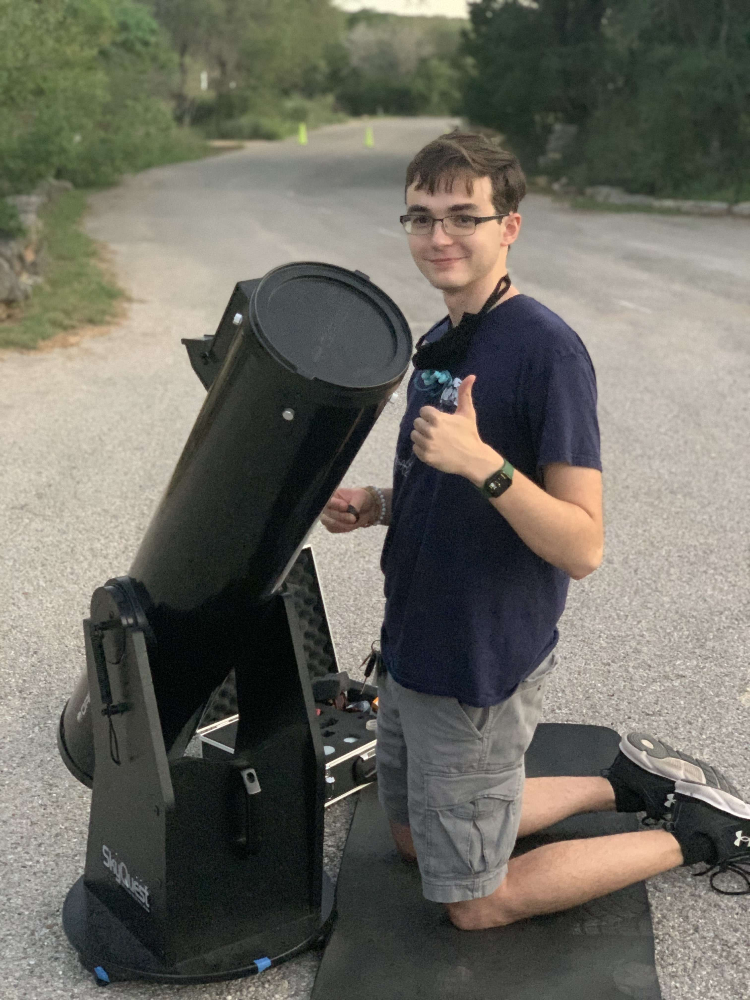
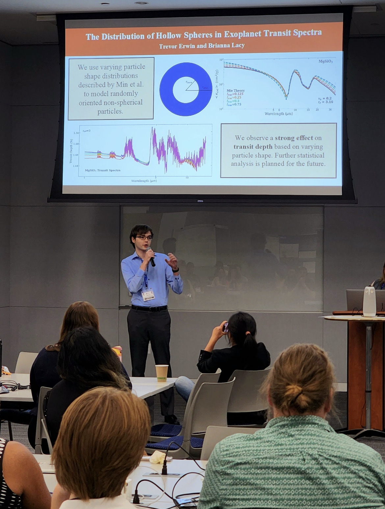
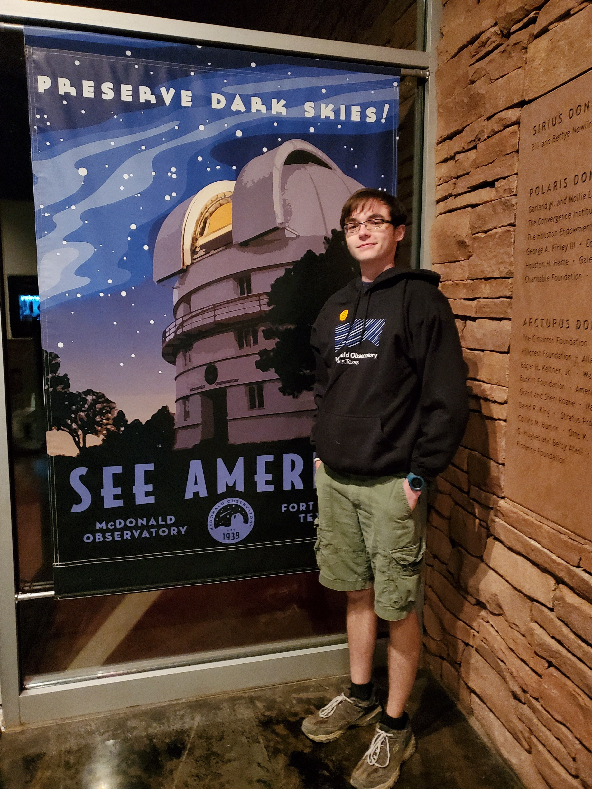
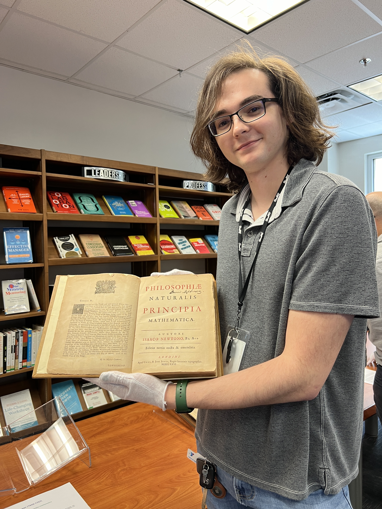
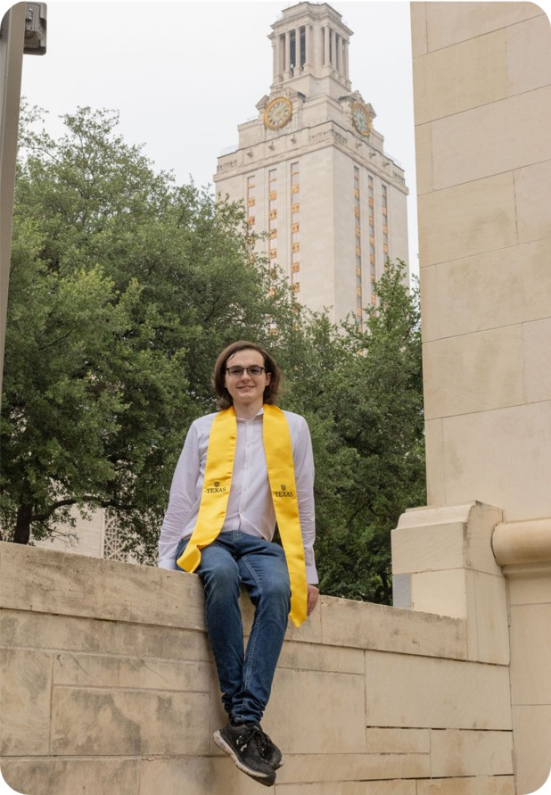
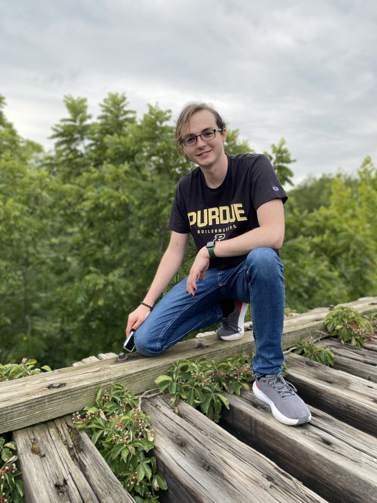
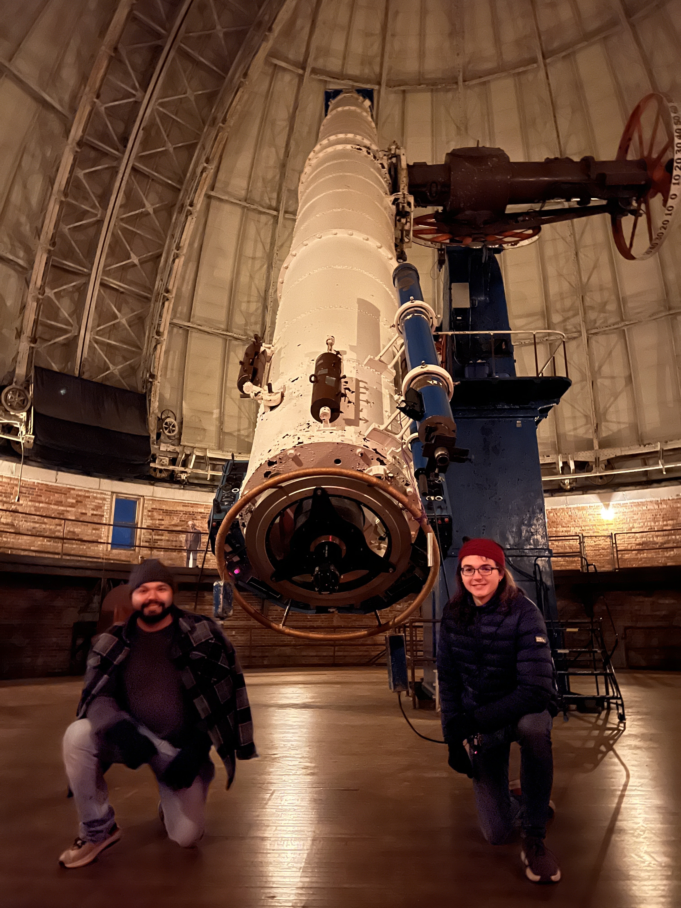
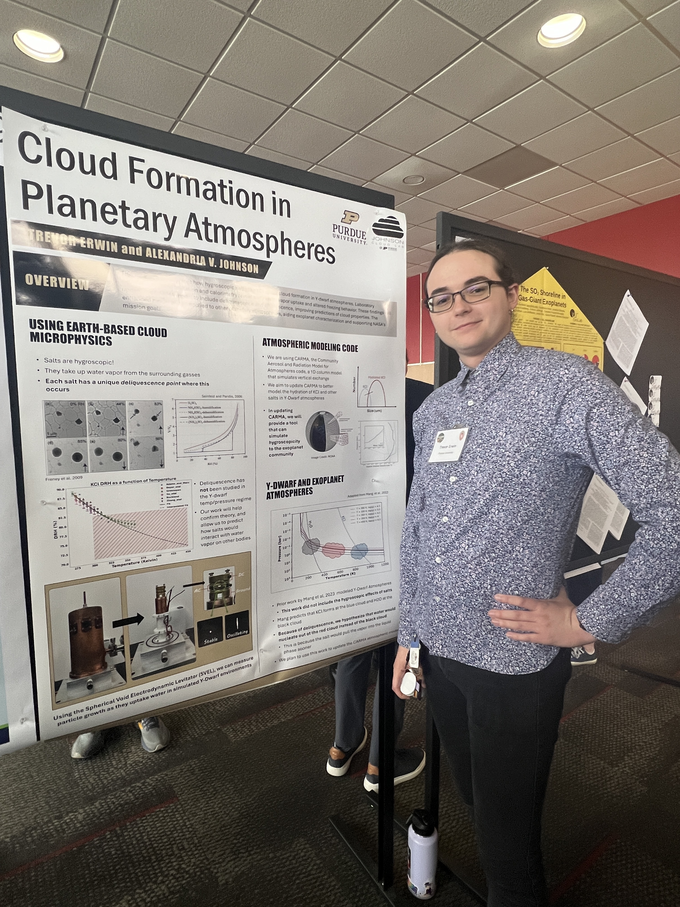

My background, interests, and journey into astronomy and physics.




Hello! I'm Trevor Erwin, a graduate student interested in astronomy, physics, and planetary science. Today, much of my work focuses on combining theoretical understanding, scientific computing, and observational data to investigate astrophysical systems.
I was born in San Antonio, Texas and was always fascinated by space. I remember sitting in our backyard at night, gazing up at the stars, wondering what we could learn from them. After working in the summers in high school, I purchased my first telescope, which changed my life. I spent most of my time from then on sharing the night sky with others, doing community outreach, and learning as much as I could about the stars.
I studied at the University of Texas at Austin for my undergraduate, working with Dr. Caroline Morley. This was when I first started learning about exoplanets and their atmospheres. My work with Dr. Morley involved creating a new particle model for studying dense particles in exoplanet atmospheres. I fell in love with the field and have been pursuing it ever since.
Today, I am a graduate student at Purdue University, where I work with Dr. Alexandria Johnson, studying the atmospheres of brown dwarfs, extreme substellar objects with unique atmospheric properties. My work focuses on modeling salts and their interaction with water vapor, applying what we know about Earth's microphysics to the stars.
My primary interests lie within exoplanet astronomy and planetary science. In particular, I am interested in exoplanet atmospheres and the origin of life. My work examines how we can apply our knowledge of Earth's atmosphere to better understand the atmospheres of exotic exoplanets. See my research page for more information on my work!
As a scientist, I feel a responsibility to help inspire the next generation of young researchers and engineers. As a result, I often work with local schools and educators through demonstrations, classroom visits, and astronomy-focused lessons! I love teaching and sharing my passion for science with others! Interested in having me visit your school? Please reach out!
Outside of academics, I love playing board games and Dungeons and Dragons. One of my favorite board games is called Terraforming Mars by Fryx Games. I'm also an ametueur photographer, and love hiking and camping, exploring new places and capturing fun moments with my fiancee.
I have a little cat named Princess Toast, and I enjoy reading new books while she sits on my lap. Some of my favorite books lately have been the Dungeon Crawler Carl series by Matt Dinniman, and Children of Time by Adrian Tchaikovsky.



